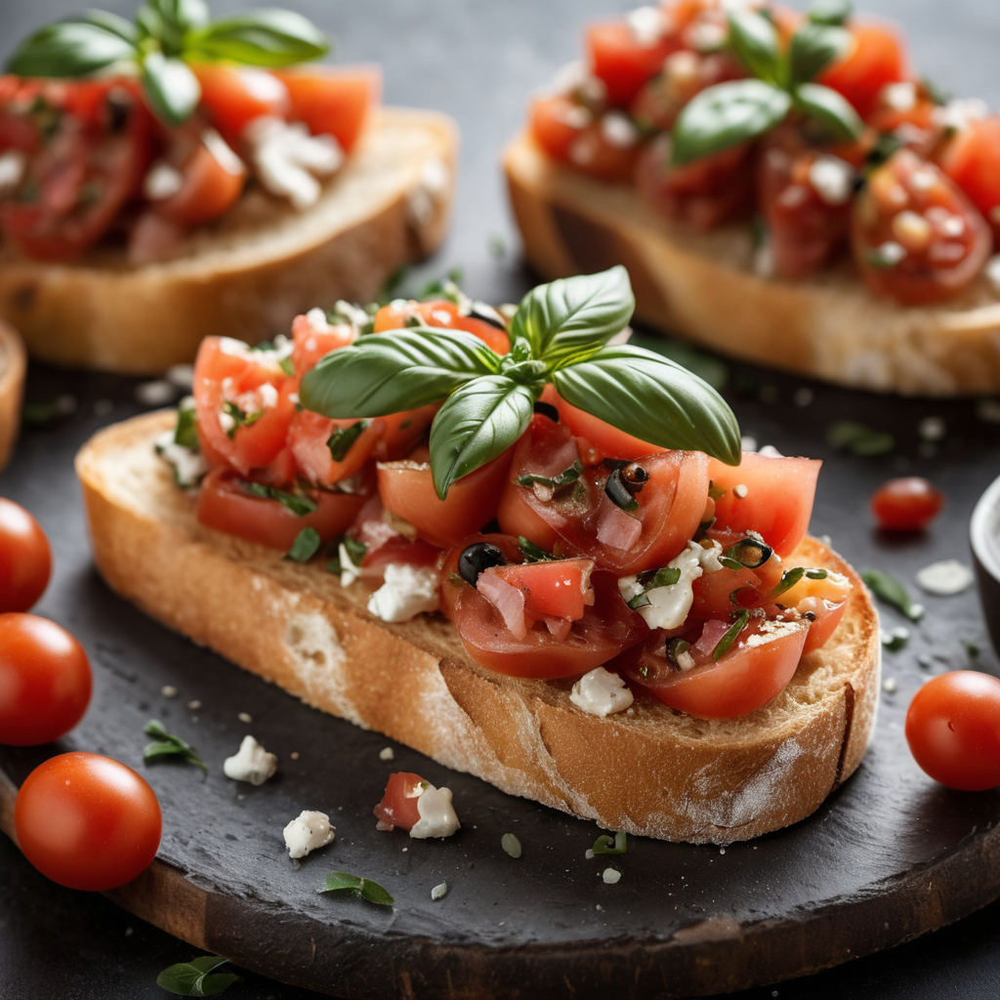

Hozzávalók:
- 1 Friss bagett vagy ciabatta kenyér, szeletelve és pirítva
- 1 Érett paradicsom, apró kockákra vágva
- 1 db Fokhagyma, zúzva vagy reszelve
- Friss bazsalikomlevél, apróra vágva
- 2 tk Extra szűz olívaolaj
- Só és frissen őrölt fekete bors ízlés szerint
Elkészítés:
- A pirított kenyérszeletekre kenjük a zúzott vagy reszelt fokhagymát
- Kanalazzuk rá a paradicsomkockákat.
- Szórjuk meg friss bazsalikomlevéllel.
- Locsoljuk meg extra szűz olívaolajjal.
- Sózzuk és borsozzuk ízlés szerint.